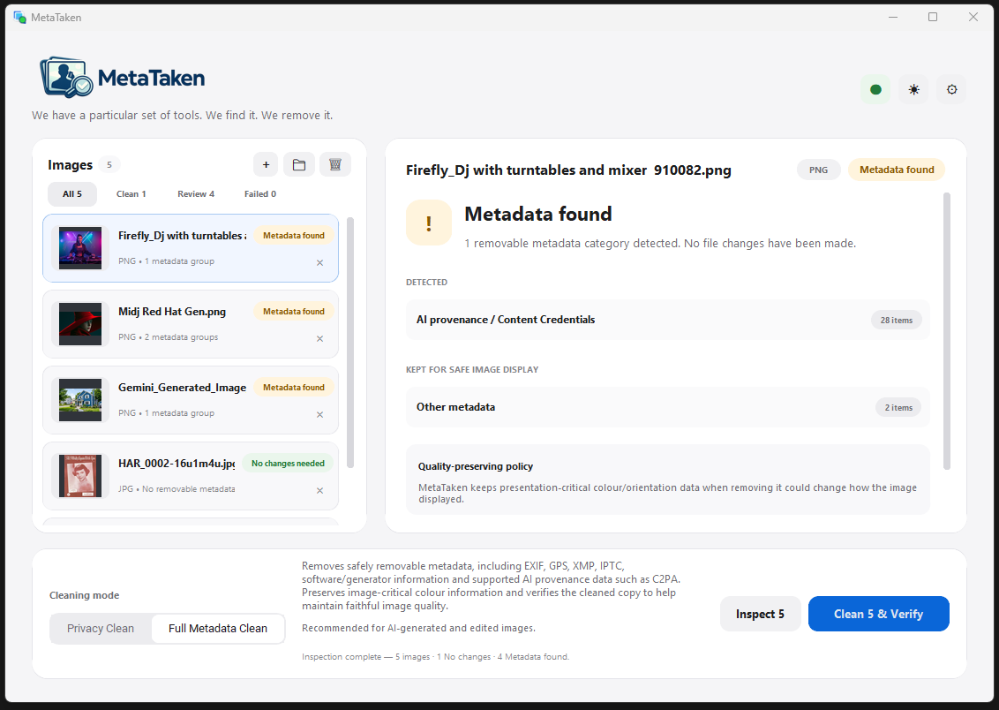

Selling something online
Photos taken at home can carry location, date and device details. MetaTaken lets you check what is attached before the listing goes public.
We have a particular set of tools. We find it. We remove it.
Images can carry information you never see — where they were taken, when, what device was used, who created or edited them, and even which software or AI tools were involved. MetaTaken explains what is attached, lets you remove what you do not want, and creates a separate cleaned copy. Your original stays untouched.

The MetaTaken workflow
Power underneath, simplicity above. MetaTaken keeps the main workflow deliberately small.
Add individual images, multiple folders, subfolders or a batch.
See findings grouped into understandable categories, with technical detail available when you want it.
Choose Privacy Clean or Full Metadata Clean. MetaTaken creates a new cleaned copy and leaves the original untouched.
The cleaned copy is inspected again, with decoded-pixel comparison where supported.
Choose how far to go
The main choices stay simple. MetaTaken handles the technical detail underneath and explains the result afterwards.
See what MetaTaken can identify without changing the file.
Remove personal and private metadata from a separate cleaned copy.
Go further and remove all safely removable metadata MetaTaken supports.
Your original stays yours
MetaTaken creates a separate output copy, removes the selected metadata from that copy, then automatically re-inspects it. Where supported, decoded image pixels are compared before and after so MetaTaken can report whether pixel content remained unchanged.
Conservative by design
Some image structures are unusual, proprietary or too risky to rewrite blindly. When the evidence isn't strong enough, MetaTaken says so.
That means a file can be marked Review instead of being called clean when something remains, is uncertain, or cannot be safely verified.
Image support
MetaTaken supports the image formats people actually use, with more added only when we can clean and verify them safely.
HEIC/HEIF/HIF decoded-pixel verification depends on compatible Windows WIC/codec support for the specific file.
Additional image formats may be added in future releases where they can be supported reliably.
Local by design
MetaTaken's normal image inspection, cleaning and verification workflow runs locally on your computer.
A useful distinction
MetaTaken cleans supported metadata and provenance structures. It does not claim to remove pixel-level watermarks.
Freeware for Windows
MetaTaken v0.3.0-rc2 is the current accepted release candidate and is available now as a portable Windows x64 download.
Quick answers
No. The desktop image-processing workflow is designed to inspect, clean and verify supported images locally on your computer, with no cloud image-processing path.
No. MetaTaken never cleans an image in place or overwrites your original. Cleaning creates a separate output copy, and an existing cleaned output is not silently overwritten.
It can. Privacy Clean targets timestamps, and Full Metadata Clean removes supported metadata more broadly. That can include the photo's capture date where it is stored as removable metadata. Your original is never overwritten, so the original file keeps its original metadata.
MetaTaken changes metadata structures in the cleaned copy, but it does not intentionally alter image pixels. After cleaning, decoded pixel content is compared where supported and the result is reported rather than assumed.
Yes, Full Metadata Clean targets supported C2PA / Content Credentials / JUMBF provenance and generator metadata. When a platform applies a label from those embedded credentials, removing them can prevent that metadata-based label from following the cleaned file. Platforms may also use independent detection methods, so MetaTaken cannot guarantee how every service will classify every upload.
No claim is made about removing pixel-level watermarking such as SynthID. Current SynthID status is: Not tested / detection unavailable.
No. MetaTaken reports what it can detect, remove and verify. It deliberately uses Review, Failed, Unsupported or uncertain outcomes when stronger claims are not justified.
Review means something remains, is uncertain, is structurally protected, or could not be safely handled or verified. MetaTaken prefers that over a false Clean result.
Yes. MetaTaken for Windows is proprietary freeware: free to download and use.